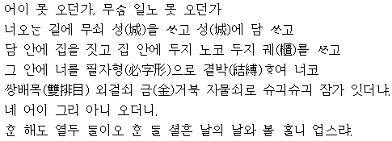
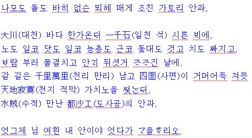

님이 오겠다고 하기에 저녁 밥을 일찍 지어 먹고
중문을 나와서 대문으로 나가, 문지방 위에 올라가서,
손을 이마에 대고 임이 오는가 하여 건너산을 바라보니,
거무희뜩한 것이 서 있기에 저것이 틀림없는 임이로구나.
버선을 벗어 품에 품고 신을 벗어 손에 쥐고, 엎치락뒤치락
허둥거리며 진 곳, 마른 곳 가리지 않고 우당탕퉁탕 건너가서,
정이 넘치는 말을 하려고 곁눈으로 흘깃 보니,
작년 7월 3일 날 껍질을 벗긴
주추리 삼대(씨를 받느라고 그냥 밭머리에 세워 둔 삼의 줄기)가 알뜰하게도 나를 속였구나.
마침 밤이기에 망정이지 행여 낮이었다면 남 웃길 뻔했구나.
지은이 : 미상
갈래 : 사설시조
성격 : 해학적, 과장적, 여성적
제재 : 임
주제 : 임을 애타게 기다리는 마음
특징 : 화자의 행동을 과장되면서도 해학적으로 표현함
출전 : 진본 청구영언(珍本 靑丘永言)
풀이
어이 못 오던가. 무슨 일로 못 오던가.
너 오는 길에서 무쇠 성을 쌓고 성 안에 담을 쌓고, 담 안에 집을 짓고 집안에 뒤주 놓고
뒤주 안에 궤를 짜고, 그 안에 너를 필자평으로 단단히 묶어 넣고,
쌍배목의 외걸쇠 금거북 자물쇠로 꼭꼭 잠갔더냐. 네 어이 그리 아니 왔느냐.
한 달이 서른 날이니. 나를 찾아 올 하루가 없으랴.
지은이 : 미상
갈래 : 사설 시조
성격 : 과장적, 원망적, 해학적
구성 : 임에게 오지 않는 까닭을 물음 - 오지 않는 임에 대한 책망
표현 : 열거, 연쇄, 과장법
주제 : 임에 대한 그리움과 야속한 마음, 임을 기다리는 안타까운 마음, 오지 않는 임에 대한 원망과 안타까움
풀이
나무도 돌도 전혀 없는 산에서 매한테 쫓기는 까투리의 마음과
대천 바다 한가운데 일 천 석 실은 배에
노도 잃고, 닻도 잃고, 용총(돗대의 줄)도 끊어지고, 돛대도 꺾이고, 키도 빠지고,
바람 불어 물결 치고, 안개 뒤섞여 잦아진 날에
갈 길은 천 리 만 리 남았는데 사면은 검어 어둑하고,
천지 적막 사나운 파도 치는데 해적 만난 도사공의 마음과
엊그제 임 여읜 내 마음이야 어디에다 비교하리요?
작자 : 미상
형식 : 사설시조, 서정시
어조 : 절망적이고 절박한 여인의 목소리
성격 : 별한가(別恨歌)
표현 : 열거, 비교, 과장, 점층법, 감정이입의 기법 사용과 상징적 표현이 농후
제재 : 매에 쫓기는 까투리와 곤란한 처지에 빠진 도사공
주제 : 사랑하는 임을 여읜 걷잡을 수 없이 절박한(참담한) 심정,
출전 : 병와가곡집(甁窩歌曲集)
풀이
천지간 만물지중에 그 무엇이 무서운고.
백액호(白額虎) 시랑(豺狼)이며 대망 독사(毒死) 오공(蜈蚣) 지주 야차 두억신과 이매망량 요괴(妖怪)
사기며 호정령 몽달귀신 염라사자와 시왕차사를 다 몰속 겪어 보았으나
아마도 님을 못 보면 간장에 불이 나서 사라져 죽게 되고 볼지라도 놀라고 끔찍하여 사지가
절로 녹아 어린 듯 휘한 듯이 말도 아니 나기는 님이신가 하노라.

작자 : 미상
갈래 : 사설 시조
성격 : 이별가, 수심가
주제 : 소식이 없는 임에 대한 그리움 / 아무런 소식이 없는 임을 못 보는 것이 이 세상에서 제일 무서울 정도로 임을 뜨겁게 사랑함
특징 : 문답법, 과장법, 열거법, 점층법을 사용하여 화자의 마음을 효과적으로 드러냄
출전 : 육당본 ‘청구영언’
풀이
참고 hwp